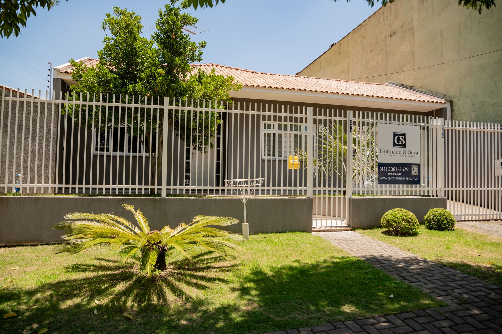

Três décadas de trajetória. Uma equipe que cresceu junto com quem confiou nela.
Desde 1994, o Gutmann & Silva assessora empresas e famílias com uma equipe que hoje reúne mais de 30 profissionais, atuando em Direito Empresarial, Tributário, Trabalhista, Cível, Família & Sucessões e Previdenciário — com sede no Paraná e atuação registrada também em São Paulo e Santa Catarina.

Desde 1994
30 anos não se constroem — se acumulam, um cliente de cada vez
Fundado em 1994, o Gutmann & Silva é hoje um dos escritórios mais consolidados do Paraná, com uma trajetória construída quase inteiramente por indicação e relacionamento de longo prazo — a prova mais concreta de que confiança, no Direito, se conquista com o tempo. Nossa atuação nasceu no Paraná e, ao longo de três décadas, se estendeu a São Paulo e Santa Catarina, sempre mantendo o mesmo princípio: entender o negócio ou a situação do cliente antes de indicar qualquer caminho jurídico.
Hoje somos mais de 28 advogados e advogadas organizados por área de especialização.
- 30anos de história (desde 1994)
- 30+profissionais
- 3estados de atuação: Paraná, São Paulo e Santa Catarina
O que fazemos
Áreas de Atuação
Empresarial
Assessoria jurídica contínua para empresas em constituição societária, contratos, governança e operações do dia a dia do negócio.
Tributário
Planejamento e orientação tributária para pessoas físicas e jurídicas, incluindo análise de enquadramento e regimes especiais.
Trabalhista
Consultoria preventiva e representação em Direito do Trabalho, tanto para empregadores quanto para pessoas físicas.
Cível
Atuação em contratos, responsabilidade civil, questões imobiliárias e demais relações regidas pelo Direito Civil.
Família & Sucessões
Orientação em planejamento sucessório, inventários, partilhas e questões de direito de família, com a discrição que o tema exige.
Previdenciário
Análise de direitos previdenciários, benefícios e questões relacionadas ao INSS, incluindo situações de isenção fiscal.
Presença
Onde atuamos
O Gutmann & Silva tem sede em São José dos Pinhais, no Paraná, e atua com registros ativos nas seccionais da OAB de três estados:
Essa presença em três estados permite acompanhar clientes com operações que ultrapassam fronteiras estaduais, mantendo o mesmo padrão de atendimento em qualquer frente.
- Paraná (OAB/PR)sede do escritório
- São Paulo (OAB/SP)
- Santa Catarina (OAB/SC)
Reconhecimentos
Reconhecimentos
Ao longo de nossa trajetória, o Gutmann & Silva foi reconhecido por instituições e pela comunidade que atende:
- Prêmio
Eleito Melhor Escritório de Advocacia do Ano em São José dos Pinhais em 2022, 2024 e 2025
- Homenagem
Homenageado pela Assembleia Legislativa do Paraná
- Google
Nota 4,9 no Google, com 139 avaliações
Trajetória
Por que escolher um escritório com trajetória
Histórico consolidado.
Mais de três décadas de atuação contínua no mercado jurídico paranaense e nacional.
Equipe multidisciplinar.
Profissionais dedicados a áreas específicas do Direito, permitindo profundidade técnica em cada frente.
Presença em três estados.
Registro em três seccionais da OAB (PR, SP e SC), acompanhando clientes com operações em mais de um estado.
Relacionamento de longo prazo.
Construímos vínculos duradouros com empresas e famílias, entendendo cada fase de sua trajetória.
Precisa de orientação jurídica especializada?
Entre em contato com o Gutmann & Silva e converse com uma equipe preparada para entender sua situação antes de indicar qualquer caminho.
Fale conosco